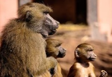

De chimpansee is een grote, sterke mensaap met een gedrongen lichaamsbouw. Een volwassen chimpansee
heeft een kop-romplengte...
van 75 tot 100 cm[3], een schouderhoogte van 100 tot 179 cm en een
lichaamsgewicht van ongeveer 35 tot 65 kg. Vrouwtjes wegen gemiddeld 45 kg, mannetjes 55 kg.
Het gewicht van chimpansees in gevangenschap ligt over het algemeen hoger. Een chimpansee heeft
lange armen die samen tot 2,7 m kunnen worden uitgespreid. Ze zijn meestal rechtshandig.[4]
De schouders en armen van een chimpansee zijn zeer gespierd, veel sterker dan die van de mens.
De benen zijn daarentegen vrij kort. Het gezicht heeft een smalle neus, diepgelegen ogen, opvallende
wenkbrauwbogen, grote, ronde oren, een brede bovenkaak en smalle lippen.
voedsel
Uit veldonderzoek van wilde chimpansees in Afrika is gebleken dat groepen chimpansees die op verschillende
locaties leven ook eigen gedragsrepertoires vertonen. Zij
vertonen bijvoorbeeld verschillen...
in het verzorgen van zichzelf
en hun kinderen, de onderlinge omgang, gebruik
van bepaalde voorwerpen of gereedschappen.
Deze gedragsverschillen kunnen verklaard worden als een gevolg van cultuur, dat wil zeggen van sociaal gevormd
gedrag dat van de ene generatie aan de volgende
generatie wordt doorgegeven[10]. Een tweede mogelijk is dat deze gedragsverschillen voortkomen uit verschillen
in genetische kenmerken. Een recente studie waarbij
bij groepen wilde chimpansees ook het DNA is gemeten[11], heeft kunnen vaststellen dat deze groepen ook
verschillen in genetische kenmerken. Het laatste woord over
de vraag in hoeverre gedragsverschillen
Leefgebied
De chimpansee komt voor in equatoriale bossen in Centraal- en West-Afrika, van Senegal via Congo-Kinshasa,
ten
noorden van de
Kongostroom, oostwaarts tot...
westelijk Tanzania en westelijk Oeganda. Hij leeft voornamelijk in open wouden en
regenwouden, maar
is ook te vinden in bergbossen en bossavannes.
De schattingen over het aantal nog in het wild levende chimpansees lopen uiteen. Volgens sommige deskundigen
zouden er nog zo'n
150.000 tot 200.000 levende individuen over zijn, volgens anderen nauwelijks 100.000. Een eeuw geleden waren het
er misschien nog 2 miljoen.
Leefwijze

De chimpansee is een dagdier. Hij is voornamelijk vroeg in de ochtend en in de namiddag actief, op het
heetst
van de dag rust hij.
Hij brengt veel tijd...
op de grond door, maar klimt ook regelmatig in bomen om voedsel te zoeken en te slapen. In
de boom slaapt
hij in een zelfgemaakt slaapnest van bladeren en takken, die hij aan het einde van de avond bouwt. Het nest is
gelegen op een
hoogte van 6 tot 25 m. Hij loopt meestal op handen en voeten, en gebruikt de voetzolen en de knokkels van de
handen om zich voort
te bewegen. Hij kan ook op de achterpoten lopen, maar doet dit enkel over korte afstanden. Lopen op twee poten
gebeurt meestal
als de voorpoten al ergens anders voor worden gebruikt, bijvoorbeeld het dragen van voedsel of voorwerpen. Met
zijn krachtige
armen kan hij in een boom van tak naar tak slingeren.